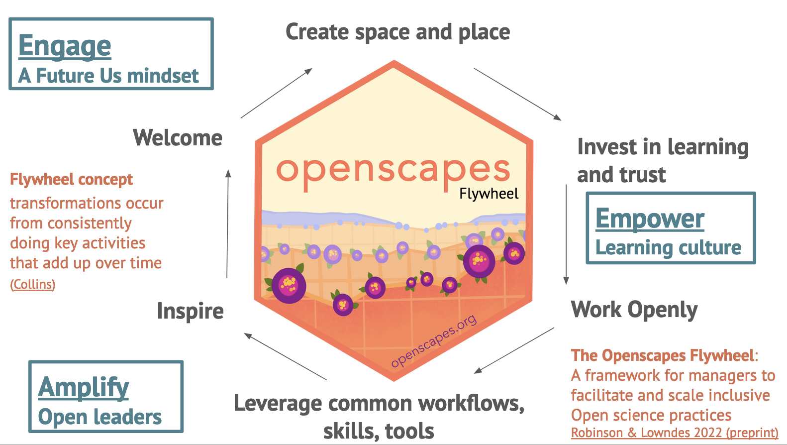

NASA Openscapes: Approaches and Stories of Kinder, Open Science in the Cloud
Julie Lowndes ![]()
Erin Robinson
NASA Openscapes Mentors
In December at the AGU Fall Meeting in San Francisco, we were so grateful to connect with so many colleagues in person. We supported NASA Mentors Cloud Workshops on Sunday and organized a Happy Hour with colleagues from across NASA and the Open Science world. We attended and gave talks thoughout the week in addition to making many great connections in the Exhibition Hall, Poster Hall, and outside in the sun. This is a brief summary of our Friday 8-minute talk titled NASA Openscapes: Approaches and Stories of Kinder, Open Science in the Cloud.
Quick links:
- Slides from our talk
- NASA Openscapes links to all presentations
- Our NASA-Openscapes AGU Planning Repository - summary of our activities
How we work: Openscapes Flywheel
The Openscapes Flywheel is a tool for movement building (Robinson & Lowndes 2022). We developed this from the early days collaborating with the NASA Mentors and it is open source: available for you to reuse and fork as other groups are starting to do. We reach for the Flywheel as a tool for planning, implementation and communication, just as we reach for R, Quarto, and JupyterHubs for analysis, documentation, and cloud computing.
The Flywheel is a concept developed by Jim Collins, where transformations occur from consistently doing key activities that add up over time. The Openscapes Flywheel at its simplest form has six steps that we repeat daily, monthly, and over years. Starting from the bottom and going clockwise: Leverage common workflows, skills, and tools; Inspire; Welcome; Create space & place; Invest in learning and trust; Work openly.
 'Create space and place to connect and collaborate; remove barriers to participation (paid time, part of jobs)' > 'Invest in learning and trust; Everyone has something to learn, ask, teach; don't need to be an expert in everything. Cultivate psychological safety, growth mindset. Slowing down to speed up.' > 'Work Openly; Put what you learn into practice quickly, role-modeing sharing imperfect work and identifying common challenges and opportunities. Openness is a spectrum; first Future You and then Future Us' > Leverage common workflows, skills, tools; This is where we speed up: Iterate, reuse, remix with each other and teh broader community' > 'Inspire broader scientific communities through visible examples and leaders -- Open science shift' > repeat. These six steps are summarized by three overarching goals, which are also written around the logo: 'Engage a future us mindset', 'Empower learning culture', and 'Amplify open leaders'.">
We talked through what this looked like for the NASA Openscapes project in Year 1, and then again in Years 2-3 as the Flywheel gained momentum as the Mentor community grew and supported researchers on the Cloud.
Turning hundreds, thousands of times in ways big and small
What’s so exciting is that following these initial turns of the Flywheel, it is now turning hundreds, thousands of times in ways big and small: like when a researcher uses GitHub for the first time and then turns around to teach their supervisor, and when staff have the confidence to speak up in meetings with what they know from the broader open science community. We’ve shared these stories in several manuscripts and blog posts, including a cross-government collaboration:
Technical & social infrastructure together
What’s key here is that technical & social infrastructure have been prioritized together consistently from the start. We focus on developing a kinder, open science mindset together: Mentorship is a skill we can all develop, just as we can all learn coding or data management as a skill, no matter where we’re starting from. In the open science world, there are many places to learn from & we can all join existing efforts with humility and a growth mindset to learn.

Citation
@online{lowndes2024,
author = {Lowndes, Julie and Robinson, Erin and Openscapes Mentors,
NASA},
title = {NASA {Openscapes:} {Approaches} and {Stories} of {Kinder,}
{Open} {Science} in the {Cloud}},
date = {2024-01-18},
url = {https://openscapes.org/blog/2024-01-18-agu-talk-2023},
langid = {en}
}